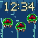
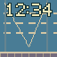
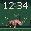
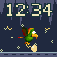
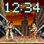
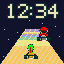
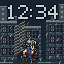
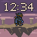
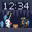

SNES clock pack 2
11 faces · 64×64 · 25 FPS · 12-second loops
GIFs show fixed 12:34. Native assets require the included SNTL firmware source; incompatible with the legacy SNPK loader.
Build and size details · Artwork provenance

Maridia / Drifting Colony
Super Metroid
Native SNTL · GIF
Water Land / Luigi’s Ferry
Super Mario All-Stars
Native SNTL · GIF
Rambi Rumble / Rhino Charge
Donkey Kong Country 2: Diddy’s Kong Quest
Native SNTL · GIF
Squawks’s Shaft / Lantern Flight
Donkey Kong Country 2: Diddy’s Kong Quest
Native SNTL · GIF
Suzaku Castle / Ryu versus Chun-Li
Street Fighter II Turbo: Hyper Fighting
Native SNTL · GIF
Rainbow Road / Yoshi under the Stars
Super Mario Kart
Native SNTL · GIF
Zozo / Rain & Rooftops
Final Fantasy VI
Native SNTL · GIF
Floating Continent / Edge of Ruin
Final Fantasy VI
Native SNTL · GIF
Narshe Cavern / Dance for Treasure
Final Fantasy VI
Native SNTL · GIF
Ultros / Fire Dance
Final Fantasy VI
Native SNTL · GIF
Forest Swarm / Dance & Cure
Final Fantasy VI
Native SNTL · GIF